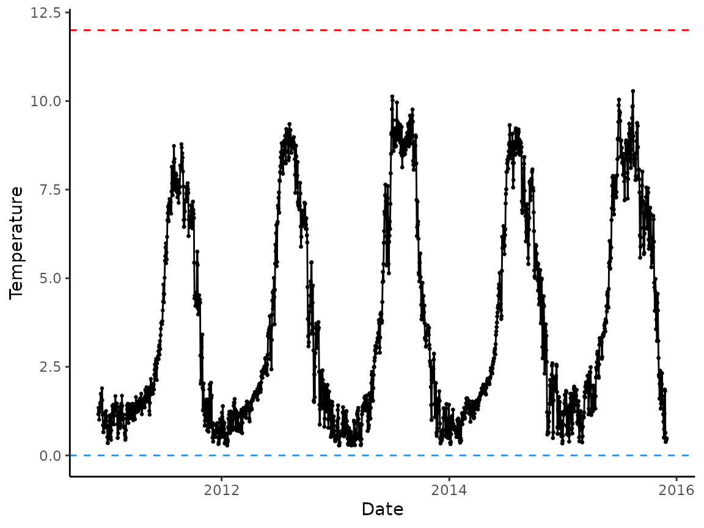

Background
hatchR is an R package designed to allow users to
leverage daily temperature records to predict when a fish is expected to
hatch and/or emerge using statistical models. Specifically,
hatchR is intended to bridge the analytic gap of taking
statistical models developed in hatchery settings (e.g., Beacham and Murray 1990) and applying
them to real world temperature data sets using an effective value
framework developed by Sparks et al.
(2019).
Input Data
Fundamentally, this package assumes you have data with two columns: a date column, giving the date/date-time of a stream temperature measurement, and a temperature column, giving temperature measurement (in centigrade).
Generally, temperature datasets are either 1) already summarized by day (i.e., mean daily temperature) or, 2) in a raw format from something like a HOBO TidbiT where readings are taken multiple times per day, which can be summarized into a mean daily temperatures. Alternatively, new statistical models like that of Siegel et al. (2023) could be similarly implemented.
We expect your data to look something like this:
| date | temperature |
|---|---|
| 2000-01-01 | 2.51 |
| … | … |
| 2000-07-01 | 16.32 |
| … | … |
| 2000-12-31 | 3.13 |
Other columns are okay to include, but these two columns (with any name—just without spaces) are needed.
At present, hatchR only uses continuous data. Therefore,
your data is expected to be continuous and complete. If you have days of
missing data, you could impute them using rolling means or other
approaches. hatchR can use values down to freezing (e.g, 0
°C), which returns extremely small effective values, and time to hatch
or emerge may be > 1 year. In these cases, we suggest users consider
how much of that data type is reasonable with their data.
hatchR assumes you’ve checked for missing records or
errors in your data as it can function with gaps, so it’s important to
go through the data checks discussed below, as well as your own sanity
checks.
Importing your data
hatchR expects the date column to be a date
(<date>) or timepoint (<dttm>) object.
In this and other vignettes, we will use two datasets that come
installed with the package: crooked_river and
woody_island. Each dataset is available to the user as R
objected once hatchR is installed and attached (see
?crooked_river or ?woody_island for more
information).
The raw input data (.csv files) are stored in the
extdata/ directory installed alongside hatchR.
We may store the file path to the Crooked River example data:
path_cr <- system.file("extdata/crooked_river.csv", package = "hatchR")
path_wi <- system.file("extdata/woody_island.csv", package = "hatchR")We recommend importing your data into R using the `readr`. This is important
because functions like read_csv() or
read_tsv() or read_table() will parse date
columns into a <date> (if values are in the from
"2000-09-01") <timepoint> (if in the form
"2000-09-01 12:00:00") types.
We can load readr using:
After specifying path (using
system.file()), we load the dataset into R:
crooked_river <- read_csv(path_cr)We check the crooked_river dataset by running either
str() or tibble::glimpse() to see the
structure of the data. glimpse() is a little like
str() applied to a data frame, but it tries to show you as
much data as possible. We prefer glimpse() because it is
more compact and easier to read. It can be loaded with the
tibble package.
Now we can check the structure of the crooked_river
dataset:
str(crooked_river)
#> spc_tbl_ [3,367 × 2] (S3: spec_tbl_df/tbl_df/tbl/data.frame)
#> $ date : POSIXct[1:3367], format: "2011-09-09" "2011-09-10" ...
#> $ temp_c: num [1:3367] 7.57 7.39 7.19 7.24 7.59 7.68 7.51 7.41 6.19 6.65 ...
#> - attr(*, "spec")=
#> .. cols(
#> .. date = col_datetime(format = ""),
#> .. temp_c = col_double()
#> .. )
#> - attr(*, "problems")=<externalptr>
glimpse(crooked_river)
#> Rows: 3,367
#> Columns: 2
#> $ date <dttm> 2011-09-09, 2011-09-10, 2011-09-11, 2011-09-12, 2011-09-13, 20…
#> $ temp_c <dbl> 7.57, 7.39, 7.19, 7.24, 7.59, 7.68, 7.51, 7.41, 6.19, 6.65, 6.7…The column date is a <dttm> object, which is short
for a lubridate timepoint (sometimes called date-time).
For your own data, assuming you have a .csv file in a
data folder in your working directory called
your_data.csv, you would call:
If you import your data in with base R functions like
read.csv(), data columns will be formatted as a characters
(<char>; e.g., "2000-09-01" or
"2000-09-01 12:00:00"). You will have convert to this
column to a <date> or <dttm> type. We recommend using the `lubridate` package to do
this, which makes dealing with date a litter easier. Here is an example
of how you might do this:
library(lubridate)
crooked_river <- read.csv(path_cr)
woody_island <- read.csv(path_wi)
str(crooked_river) # note date column is imported as a character (<chr>)
#> 'data.frame': 3367 obs. of 2 variables:
#> $ date : chr "2011-09-09T00:00:00Z" "2011-09-10T00:00:00Z" "2011-09-11T00:00:00Z" "2011-09-12T00:00:00Z" ...
#> $ temp_c: num 7.57 7.39 7.19 7.24 7.59 7.68 7.51 7.41 6.19 6.65 ...
str(woody_island) # note date column is imported as a character (<chr>)
#> 'data.frame': 739 obs. of 2 variables:
#> $ date : chr "8/11/1990" "8/12/1990" "8/13/1990" "8/14/1990" ...
#> $ temp_c: num 25.9 23.3 18.5 15.3 14 ...
# change to dttm using lubridate
crooked_river$date <- ymd_hms(crooked_river$date) # if your date is in the form "2000-09-01 12:00:00"
woody_island$date <- mdy(woody_island$date) # if your date is in the form "2000-09-01"
glimpse(crooked_river)
#> Rows: 3,367
#> Columns: 2
#> $ date <dttm> 2011-09-09, 2011-09-10, 2011-09-11, 2011-09-12, 2011-09-13, 20…
#> $ temp_c <dbl> 7.57, 7.39, 7.19, 7.24, 7.59, 7.68, 7.51, 7.41, 6.19, 6.65, 6.7…
glimpse(woody_island)
#> Rows: 739
#> Columns: 2
#> $ date <date> 1990-08-11, 1990-08-12, 1990-08-13, 1990-08-14, 1990-08-15, 19…
#> $ temp_c <dbl> 25.850000, 23.308333, 18.533333, 15.350000, 13.966667, 11.35833…While hatchR can take dates formatted in any style as
long as they are either <date> or <dttm> types,
hatchR operates on them in the ISO 8601 format, which is how
they are output (either in year-month-day or
year-month-day-hour-minute-second) from functions. This is also
convenient because ggplot2 handles <date> and
<dttm> objects well without significant need for change when
plotting.
Data Checks
First, we recommend using the built-in function
plot_check_temp() to visualize your imported data and
verify nothing strange happened during your import process. The
arguments temp_min = and temp_max = can be
used to custom set thresholds for expected temperature ranges (otherwise
they are set at 0 and 25 C). Here is an example using the built-in
dataset crooked_river:
ggplot2 is installed alongside hatchR.
plot_check_temp(data = crooked_river,
dates = date,
temperature = temp_c,
temp_min = 0,
temp_max = 12)
Summarize Data
If you imported raw data with multiple recordings per day,
hatchR has a built in function to summarize those data to a
daily average mean called summarize_temp(). The output of
the function is a tibble with mean daily temperature and its
corresponding day.
# check how many rows in raw data
nrow(crooked_river) #3367 records
#> [1] 3367
#summarize to day
crooked_river_sum <- summarize_temp(
data = crooked_river,
dates = date,
temperature = temp_c
)
nrow(crooked_river_sum) #1826 records
#> [1] 1826
# note the names of the columns have changed
head(crooked_river_sum)
#> # A tibble: 6 × 2
#> date daily_temp
#> <date> <dbl>
#> 1 2010-12-01 1.16
#> 2 2010-12-02 1.34
#> 3 2010-12-03 1.25
#> 4 2010-12-04 1.01
#> 5 2010-12-05 1.29
#> 6 2010-12-06 1.23We again recommend, at a minimum, visually checking your data once it has been summarized.
#note we are now using crooked_river_sum instead of crooked_river
plot_check_temp(data = crooked_river_sum,
dates = date,
temperature = daily_temp,
temp_min = 0,
temp_max = 12)
Workflow
After importing, checking, and wrangling your data, there are a
number of different actions you can take. To demonstrate the full
workflow for hatchR, we will recreate part of the analysis
from Sparks et al. (2019) and use data
from Woody Island from Lake Iliamna, Alaska (see the Predict
Phenology Basic and Predict Phenology Advanced
vignettes).
However, the generalized workflow for hatchR is
demonstrated below.

hatchR is designed so it can be used within a single
spawn season or automated across many sites or years. However, if you
plan to use hatchR to estimate phenology within a single
season, your data will need to be subdivided for the expected
developmental period accordingly. Single and batched processing is
demonstrated in the Predict Phenology Basic and
Predict Phenology Advanced vignettes.
References
:::::::